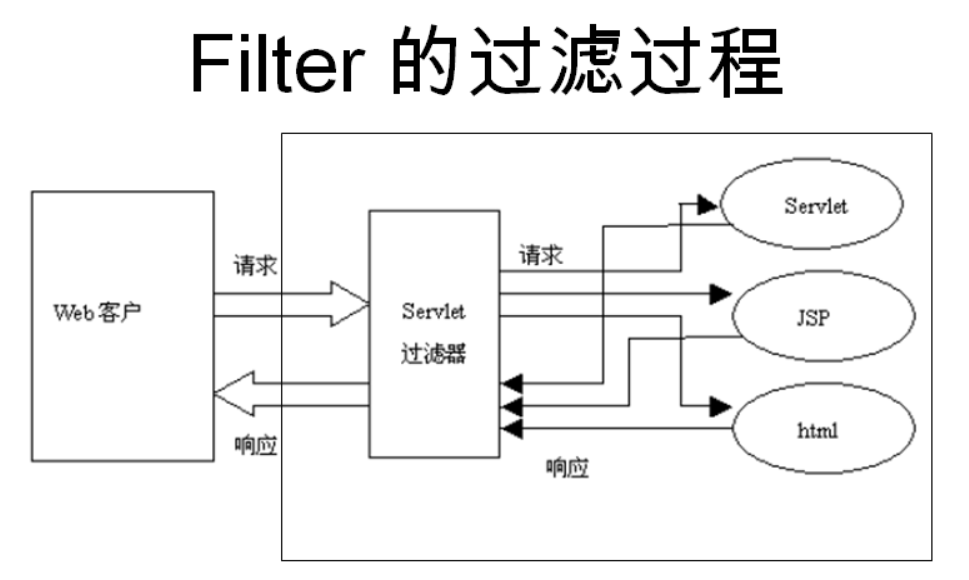
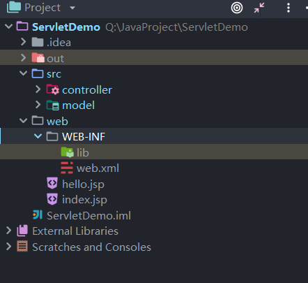

在讲解Servlet前，先介绍一下MVC模式。
我们之前使用的JSP，其中也是可以使用java小脚本来进行数据处理。
但是，我们又想要显示数据，又要处理数据，代码都放在JSP文件中，会造成代码的污染，不方便阅读和编写。
这个时候，就出现了MVC架构，用于把数据处理、数据显示、数据存放都分离，可以更好地管理。
这样一来，我们就可以把一个JavaWeb项目分为了三个层次，JSP就用来显示数据，Servlet用来处理数据，bean类用来存放数据。
Java Servlet 是运行在 Web 服务器或应用服务器上的程序，它是作为来自 Web 浏览器或其他 HTTP 客户端的请求和 HTTP 服务器上的数据库或应用程序之间的中间层。
简单来说，Servlet就是可以拦截请求，然后进行处理，之后进行数据的返回，或者是页面导航（重定向或请求转发）
作用：
过滤器可以动态地拦截请求和响应，以变换或使用包含在请求或响应中的信息。
可以将一个或多个过滤器附加到一个 Servlet 或一组 Servlet。过滤器也可以附加到 JavaServer Pages (JSP) 文件和 HTML 页面。
过滤器是可用于 Servlet 编程的 Java 类，可以实现以下目的：
在客户端的请求访问后端资源之前，拦截这些请求。在服务器的响应发送回客户端之前，处理这些响应。
过滤器是指当客户端请求某些web组件（JSP/Servlet）前先对请求做一些预处理操作，例如提交的表单包含中文时、用户是否已经进行了登录等，可以用过滤器对请求数据做中文转码；判断用户是否进行了登录等应用场合
官方建议以下案例使用过滤器；
监听器也叫Listener，是Servlet的监听器，它可以监听客户端的请求、服务端的操作等。通过监听器，可以自动激发一些操作，比如监听在线的用户的数量。
由于用得不多，这里就先大概介绍一下监听器可以用在哪个哪些功能上
两种方式，注解 @WebListener和web.xml配置 listener

PS：如果提示没有发现这个HTTPServlet类，添加一下依赖
package controller;
import java.io.IOException;
import javax.servlet.ServletException;
import javax.servlet.http.HttpServlet;
import javax.servlet.http.HttpServletRequest;
import javax.servlet.http.HttpServletResponse;
/**
* @author StarsOne
* @date Create in 2019/9/14 0014 20:14
* @description
*/
public class FirstServlet extends HttpServlet {
/**
* @param req 相当于request内置对象
* @param resp 相当于response内置对象
* @throws ServletException
* @throws IOException
*/
@Override
protected void doGet(HttpServletRequest req, HttpServletResponse resp) throws ServletException, IOException {
//调用doPost方法
doPost(req,resp);
}
@Override
protected void doPost(HttpServletRequest req, HttpServletResponse resp) throws ServletException, IOException {
//重定向页面
resp.sendRedirect(req.getContextPath()+"/hello.jsp");
}
}
<?xml version="1.0" encoding="UTF-8"?>
<web-app xmlns="http://xmlns.jcp.org/xml/ns/javaee"
xmlns:xsi="http://www.w3.org/2001/XMLSchema-instance"
xsi:schemaLocation="http://xmlns.jcp.org/xml/ns/javaee http://xmlns.jcp.org/xml/ns/javaee/web-app_4_0.xsd"
version="4.0">
<servlet>
<servlet-name>FirstServlet</servlet-name>
<!--这里要指定Servlet的类，也就是我们之前第一步编写的那个类-->
<servlet-class>controller.FirstServlet</servlet-class>
</servlet>
<servlet-mapping>
<!--这里的FirstServlet是与上面的servlet-name属性对应，可以任意取名-->
<servlet-name>FirstServlet</servlet-name>
<!--拦截的请求，请求为hello时，就会跳转到Servlet去执行-->
<url-pattern>/hello</url-pattern>
</servlet-mapping>
</web-app>关于url-pattern的补充：请看下面
我的项目中定义了两个jsp，一个是index.jsp，另外一个则是hello.jsp
index.jsp中有一个链接：
<a href="hello">点击跳转</a>之后点击上面的链接，就会被Servlet拦截，之后进行处理。我们的Servlet其实就是实现了页面重定向的操作，所以，之后就会跳转到hello.jsp的页面
PS：除了使用web.xml配置的方式之外，也可以使用注解来标记
在Servlet那个类上使用@WebServlet注解就可以,下面这段代码与之前在web.xml文件定义的也是一样的效果，点击之后也会跳转到hello.jsp中去
@WebServlet("/hello")
public class FirstServlet{
...
}| 形式 | 匹配的url |
|---|---|
| /hello | http://localhost:8080/servletdemo/hello |
| /hello.html | http://localhost:8080/servletdemo/hello.html |
之前我们写的链接的href属性，只写了hello，其实访问的url地址就是http://localhost:8080/servletdemo/hello
**以“/”字符开头，并以“/*”结尾的字符串用于路径匹配**
| 形式 | 匹配的url |
|---|---|
| /user/* | http://localhost:8080/user/hello http://localhost:8080/user/he http://localhost:8080/user/hello/aa |
| /hello.html | http://localhost:8080/servletdemo/hello.html |
简单来说，就是url以什么结尾的
| 形式 | 匹配的url |
|---|---|
| *.do | http://localhost:8080/servletdemo/hello.do |
| *.hello | http://localhost:8080/servletdemo/aa.hello |
| *.action | http://localhost:8080/servletdemo/aa.action |
| *.jsp | http://localhost:8080/servletdemo/aa.jsp |
就是相当于不写，匹配所有的url
<servlet-mapping>
<servlet-name>MyServlet</servlet-name>
<url-pattern>/</url-pattern>
</servlet-mapping>新建一个类，让它实现Filter接口
import java.io.IOException;
import javax.servlet.Filter;
import javax.servlet.FilterChain;
import javax.servlet.FilterConfig;
import javax.servlet.ServletException;
import javax.servlet.ServletRequest;
import javax.servlet.ServletResponse;
/**
* @author StarsOne
* @date Create in 2019/9/14 0014 21:35
* @description
*/
public class FirstFilter implements Filter {
@Override
public void init(FilterConfig filterConfig) throws ServletException {
}
@Override
public void doFilter(ServletRequest servletRequest, ServletResponse servletResponse, FilterChain filterChain) throws IOException, ServletException {
System.out.println("过滤器1已过滤...");
//必须要有doFilter方法，之后过滤结束就会跳转到匹配的url的Servlet中进行业务逻辑处理
filterChain.doFilter(servletRequest,servletResponse);
}
@Override
public void destroy() {
}
}
规则和Servlet的配置差不多，这里就不过多解释了
<filter>
<filter-name>FirstFilter</filter-name>
<filter-class>FirstFilter</filter-class>
</filter>
<!--如果有多个，过滤器的顺序就是按照web.xml中的过滤器顺序进行过滤 -->
<filter-mapping>
<filter-name>FirstFilter</filter-name>
<!--指定过滤全部的url -->
<url-pattern>/*</url-pattern>
</filter-mapping>测试，会发现点击链接后，控制台输出了两次，这也是侧面说明了请求重定向，客户端发出了两次请求